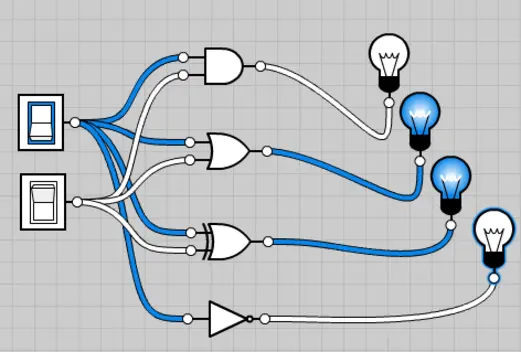
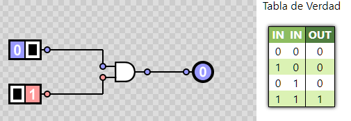
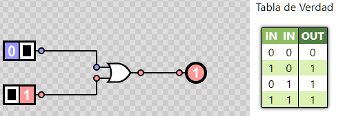

Publicacione mas recientes
31/08/2024 . Las Compuertas Lógicas: Los Ladrillos de la Computación
Las Compuertas Lógicas son circuitos electrónicos conformados internamente por transistores
que se encuentran con arreglos especiales con los que otorgan señales de voltaje como resultado
o una salida de forma booleana, están obtenidos por operaciones lógicas binarias (suma, multiplicación).
También niegan, afirman, incluyen o excluyen según sus propiedades lógicas. Estas compuertas se pueden aplicar
en otras áreas de la ciencia como mecánica, hidráulica o neumática.
Existen diferentes tipos de compuertas y algunas de estas son más complejas, con la posibilidad de ser simuladas por
compuertas más sencillas. Todas estas tienen tablas de verdad que explican los comportamientos en los resultados que otorga,
dependiendo del valor booleano que tenga en cada una de sus entradas.

Trabajan en dos estado, "1" o "0", los cuales pueden asignarse a la lógica positiva o lógica negativa. El estado 1 tiene un
valor de 5v como máximo y el estado 0 tiene un valor de 0v como mínimo y existiendo un umbral entre estos dos estados donde el resultado
puede variar sin saber con exactitud la salida que nos entregara. Las lógicas se explican a continuación:
- La lógica positiva es aquella que con una señal en alto se acciona, representando un 1 binario y con una señal en bajo se desactiva.
representado un 0 binario.
- La lógica negativa proporciona los resultados inversamente, una señal en alto se representa con un 0 binario y una señal en bajo se representa con un 1 binario.
A continuación vamos a analizar algunas operaciones lógicas una por una de las 3 principales:
Compuerta lógica AND:
También puede definirse como una multiplicación Booleana: Si el valor de todas las variables de entrada es 1, entonces el resultado en la salida será 1 lógico, si por el contrario alguna de las variables de entrada es igual a 0, la salida valdrá 0 lógico.

Compuerta lógica OR:
También definida como una suma Booleana: Siempre que, al menos una de las entradas tenga un valor igual a 1, la compuerta OR dará como resultado un 1 lógico, pero si todas las variables de entrada tienen el valor 0, la salida será un 0 lógico.

Compuerta lógica NOT:
También definida como negación Booleana: Cualquiera que sea el valor en la entrada de la compuerta, 1 o 0, la salida será lo contrario a esta. Cabe mencionar que solo es posible tener una entrada.